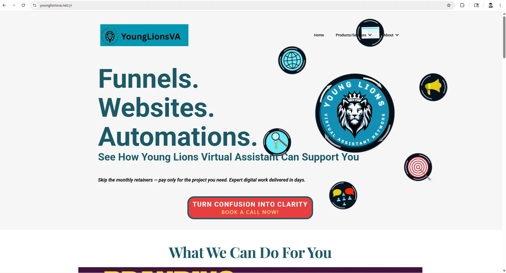
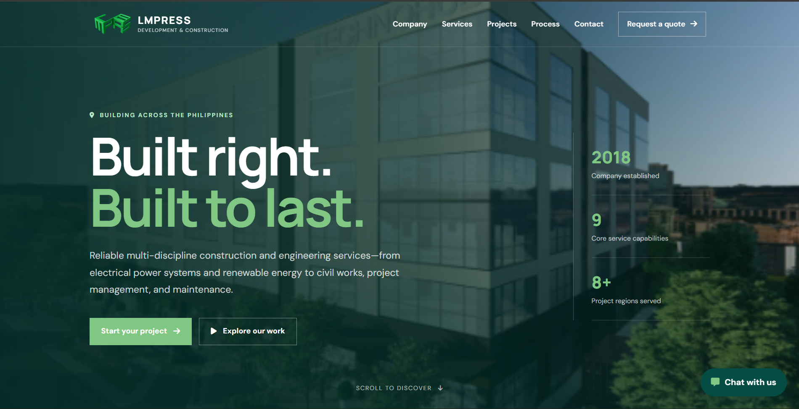
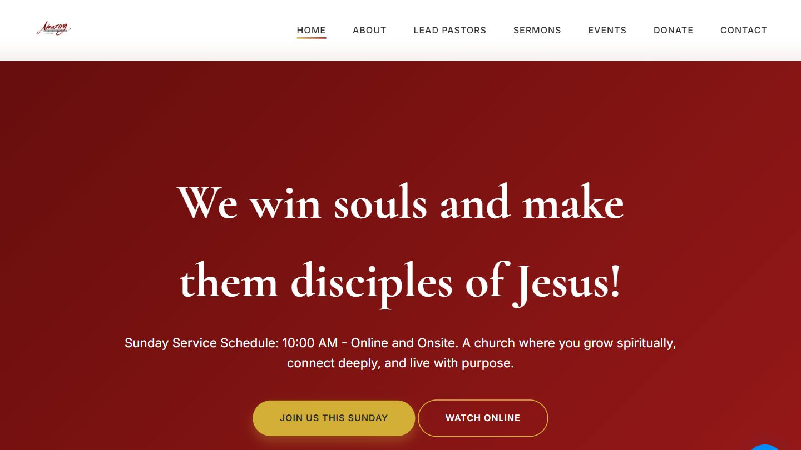
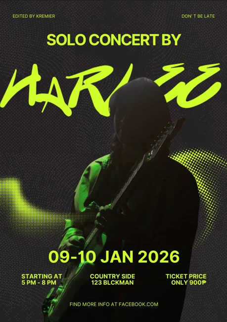
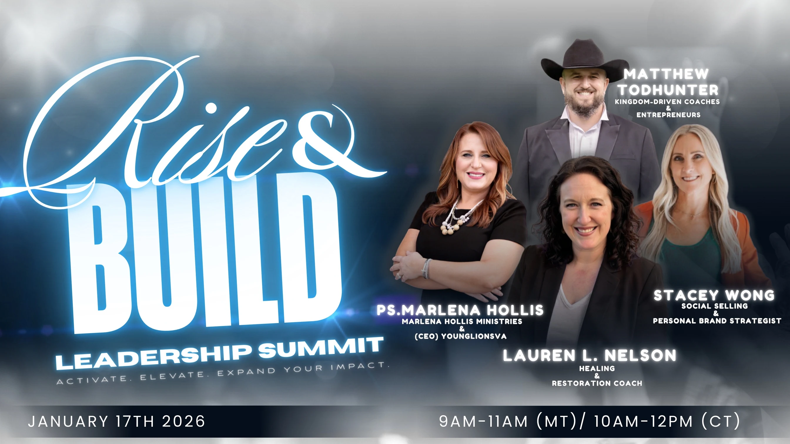
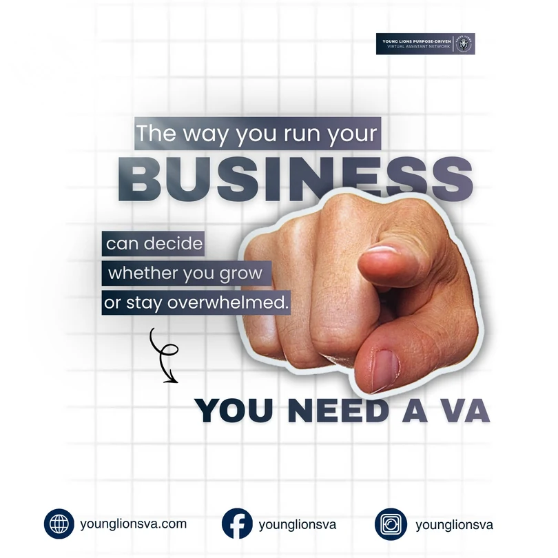
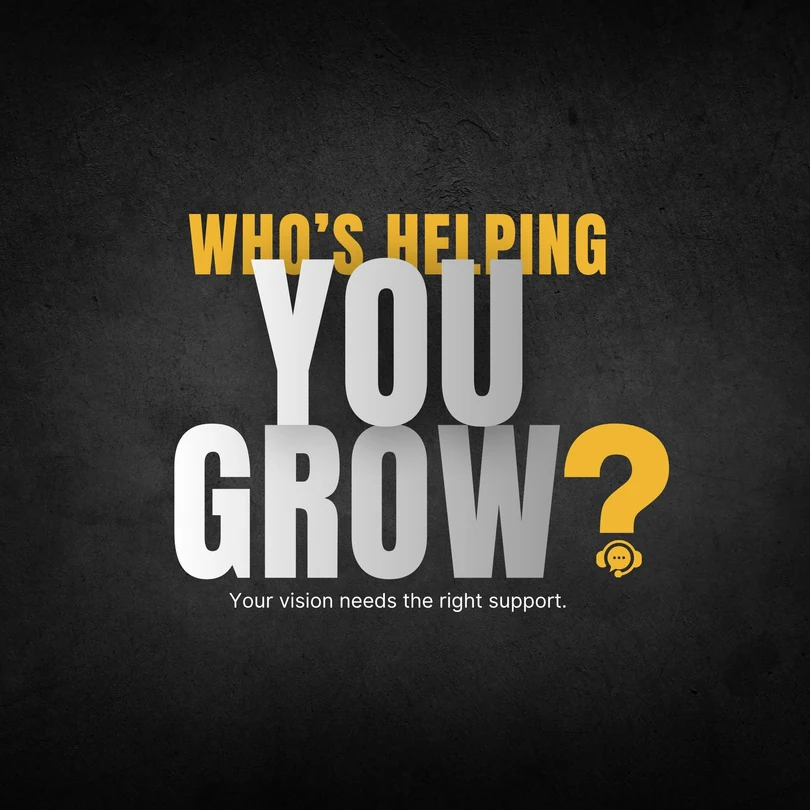

Funnel & Website Building
Responsive pages and GoHighLevel funnels designed around clear journeys and conversion.
↗Creative & technical support · Philippines
Hello, I’m
Creative & Technical Virtual Assistant

I combine creative, technical, and administrative skills to build funnels, create digital assets, organize workflows, and support the systems behind your online presence.
Creative thinking.
Reliable execution.
I’m Kremier, a creative and technical virtual assistant who connects clear design with practical systems support.
At Young Lions, I supported funnels, websites, graphic design, social content, automation, and day-to-day digital operations. My MITSI internship at NKTI Diagnostic Center added hands-on experience in technical support, troubleshooting, Python data processing, and data migration under supervision.
Practical support for your content, customer journeys, workflows, and everyday digital tasks.
Responsive pages and GoHighLevel funnels designed around clear journeys and conversion.
↗Distinct visual systems, campaign graphics, and marketing assets that stay on brand.
↗Strategic planning, publishing, engagement, and content built for each platform.
↗Smart automations that reduce repetitive work and keep leads and clients moving.
↗Market research, accurate data entry, and organized information that supports decisions.
↗Organized performance data and clear reports to help teams review campaigns and plan next steps.
↗Skills & toolkit
My technical background connects creative work with troubleshooting, automation, web development, data handling, and digital systems.
Creative and digital support at Young Lions, backed by supervised technical experience at MITSI.
Creative & Digital Support
Supported client-facing content and the digital operations behind it, from service funnels to ongoing coordination.
Massive Integrated Tech Solutions Inc.
Assignment: NKTI Diagnostic Center
Completed a Technical Support internship, assisting with troubleshooting, data migration, and Python-based data processing under the guidance of supervisors and technical personnel.
Funnels, websites, campaign visuals, and video edits—with a closer look at the work behind each project.

01 / Web & FunnelWebsite & Funnel Builder
A focused service funnel that turns complex offerings into a clear path—from discovery to action.

02 / WebsiteWebsite Development
A company website for LMPRESS Development & Construction, showcasing construction and engineering services with clear paths to projects and quote requests.

03 / Web ProjectWebsite Development / Web Project
A public church website bringing together its community, service information, sermons, and events.
Visit Live Website
My role: graphic design

My role: graphic design

My role: graphic design

My role: graphic design
Video editing
Short-form edits built for clarity, pace, and platform-native engagement.
Have a project in mind?
I’m available for virtual assistance, funnel building, graphic design, automation, technical support, and digital support projects. Tell me what you need help with.
A service funnel designed to organize Young Lions’ virtual assistant services and create a clearer path from discovery to inquiry.
Present a broad range of services simply so potential clients can understand the offer and know what action to take next.
Funnel design, content structure, visual design, user journey, and automation support.
GoHighLevel · Canva
Created a cleaner, more structured service experience with a clearer path from visitor interest to inquiry.
A company website for LMPRESS Development & Construction, highlighting construction and engineering services with paths to explore projects or request a quote.
Present construction and engineering services clearly, with navigation that leads from company information to project enquiries.
Company website · Construction & engineering.
The homepage brings together construction imagery, company information, and clear links to services, projects, and quote requests.
An event poster for a solo concert.
Make the event information easy to scan within a single poster.
Graphic design and layout.
Created the visual shown here.
A campaign visual for the Rise and Build leadership summit.
Give the summit a clear visual identity and communicate the event.
Graphic design and layout.
Created the visual shown here.
A social media graphic introducing virtual assistant support.
Present a service message in a compact social media format.
Graphic design and layout.
Created the visual shown here.
A branded social graphic focused on business growth.
Turn a business message into a readable, consistent visual.
Graphic design and layout.
Created the visual shown here.
A brand-focused video edit presented in the portfolio above.
Create a clear sequence with readable captions and a coherent pace.
Video editing, captions, and sound.
Completed the video edit shown in the portfolio.
A vertical video edit for a short-form social format.
Keep the story readable and paced for a vertical screen.
Short-form editing, pacing, and captions.
Completed the vertical reel shown in the portfolio.